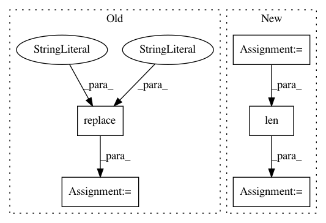

3d03ae2086b232cb6803507ae4defd997c256ec9,tensorflow/python/distribute/multi_process_lib.py,,_set_spawn_exe_path,#,90
Before Change
// /.../org_tensorflow/tensorflow/python/distribute/input_lib_test_multiworker_gpu
org_tensorflow_path = sys.argv[0][:sys.argv[0].rfind("/tensorflow")]
if org_tensorflow_path.endswith("/org_tensorflow"):
binary = os.environ["TEST_TARGET"][2:].replace(":", "/", 1)
possible_path = os.path.join(org_tensorflow_path, binary)
logging.info("Guessed test binary path: %s", possible_path)
if os.access(possible_path, os.X_OK):
path = possible_path
if path is None:
After Change
// -> tensorflow/python/my_test
path_to_use = None
guess_path = sys.argv[0][:-3]
guess_path = guess_path.split(os.sep)
for path_reduction in range(-1, -len(guess_path), -1):
possible_path = os.sep.join(guess_path[:path_reduction] +
[guess_path[-1]])
if os.access(possible_path, os.X_OK):
path_to_use = possible_path
break
// The binary can possibly have _gpu suffix.
possible_path += "_gpu"
if os.access(possible_path, os.X_OK):
path_to_use = possible_path
break
if path_to_use is None:
raise RuntimeError("Cannot determine binary path")
sys.argv[0] = path_to_use
// Note that this sets the executable for *all* contexts.
In pattern: SUPERPATTERN
Frequency: 3
Non-data size: 5
Instances
Project Name: tensorflow/tensorflow
Commit Name: 3d03ae2086b232cb6803507ae4defd997c256ec9
Time: 2020-11-18
Author: crccw@google.com
File Name: tensorflow/python/distribute/multi_process_lib.py
Class Name:
Method Name: _set_spawn_exe_path
Project Name: scipy/scipy
Commit Name: fafdd6001a8259f1408bc5f2c2cb91e5eb96c6ca
Time: 2020-08-05
Author: 44255917+swallan@users.noreply.github.com
File Name: benchmarks/benchmarks/stats.py
Class Name: ContinuousFitAnalyticalMLEOverride
Method Name: setup
Project Name: dgasmith/opt_einsum
Commit Name: efc72c4a3163b0d1a6649b2bf9fd1b238ba6a2d7
Time: 2017-10-17
Author: malorian@me.com
File Name: opt_einsum/contract.py
Class Name:
Method Name: contract_path